1.1.6.1. Outline
Internal modules of controller use CAN communication in order to transfer data. E0022 is an error code that indicates the Main Board has detected an error in a CAN communication between internal module System Boards. E0032 error code will be used for users board (BD58x) that uses a same CAN communication channel.
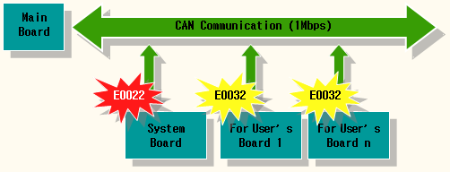
Figure 1.21 CAN Communication Structure of Hi5a Controller
System Board is a module that controls an input/output of controller's power sequence. Once this error occurs, all functions related to this will be stopped and main stops CAN communication. In order to re active all the functions, a controller must be restarted.
1.1.6.2. Causes and examine methods
|
(1) General examine
n Please check the connection status of CAN communication cable.
n Please check the power status. (power voltage or connection status of cable)
(2) If an error persists even after a restart of controller
n Please check a System Board malfunction.
n Please replace a malfunction parts and test it (Main Board, System Board, cables)
(3) If an error occurs while a controller is normally operating
n Please observe changes in surrounding environment.
n Please examine the CAN communication line.
Ø Please examine the CAN communication connector for user's module.
Ø Please examine the connection of termination resistor.
Ø Please examine the wiring structures.
Ø Please examine if a communication cable uses a twist line.
|
(1) General examine
If this error occurred while a system is normally operating, please examine the following for a start.
|

|
Reference
Once "E0022 Communication error among inner modules" occurs, mainboard will not establish a communication with system board even if a system board initiates communication. Controller must be restarted in order to reestablish a communication.
|
n Please check the connection status of CAN communication cable
Please check if a CAN cable between Main Board and System Boards are well connected. Please remove and reconnect the CAN connectors of Main Board and System Board and check if an error persists, in order to check connector's connection status.
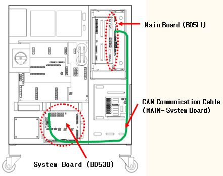
(a) Hi5a-S controller

(b) Hi5a-N controller
Figure 1.22 CAN communication cable connection between a main board (BD511) and a system board (BD530)
n Please check the power status (power voltage or connection status of cable).
Please check if a DC 5V control power is being supplied to System Board properly. If there is a problem with a power, this error may occur as the System Board will not operate.
Please check if a power is being supplied or not by using a simple method. As a below diagram, there are LED CNP1 that indicates DC 5V voltage and 7-segment that indicates the board operating status on an upper right side of System Board.
Table 1-3 Method to Check the whether the Rated Voltage on System Board is Normal or Not
|
Category
|
LED
CNP1
|
7- Segment
|
Result
|
|
1
|
Off
|
Off
|
Power on a System Board is has not been authorized properly.
Please examine the power related parts such as SMPS, Cable, Connector connections etc.
|
|
2
|
On
|
Off
|
Power of IO related board (BD531) that located at the rear of system is not authorized or malfunction.
|
|
3
|
On
|
On
|
Please check the power voltage.
|
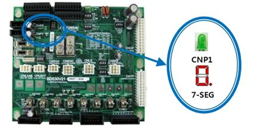
Figure 1.23 LED CNP1 for a power purpose DC5V of a system board (BD530)
If the lights of LED CNP1 and 7-segment DC are all on as above table, please check if the DC 5V control power that authorized on a board is in a range of 5.0V~5.3V.
If the voltage is out of this range, it may effect to the communication. Check points are as below diagram and it the voltage is out of range, please configure it to a range of 5.0V~5.3V from a SMPS.
TB1 Voltage control: DC 5.0~5.3V
TB1 Measuring voltage: DC 5.0~5.3V
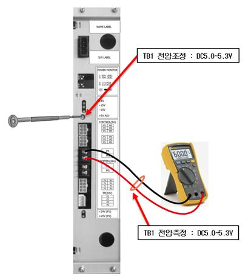
Figure 1.24 Measuring a voltage of DC 5V and controlling method
(2) If an error persists even after a restart of controller
If an error message displayed because the error is already occurring even after the controller has been restarted, the faulty area can be identified by performing a series of examines.
|

|
Reference
If you are using's a user's module (BD58x), please remove a CAN cable that connected to this module before you perform this test. It is to eliminate possible elements that will effect to the test. If this error does not persists after a restart of a controller followed by a removal of user's module cable, the cause of an error is related to a user's module. Please refer to the following paragraph.
|
In order to remove a user's module CAN communication from a controller, please unplug the CAN2 and CANS2 connectors from a System Board as below diagram. If you restart the controller, only a Main Board and System Board will keep the CAN communication.
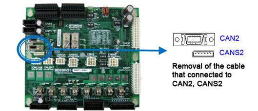
Figure 1.25 Method to remove CAN communication connection from user's module (BD58x)
n Please check the malfunction status of System Board
System Board has a 7-segment that indicates a various status. By examining it, you may determine if a System Board is malfunctioning or not. After a controller has been restarted, if the indicator does not display the content in a rotation as below, System Board malfunction is suspected. Please replace it.
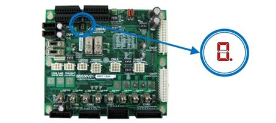
Figure 1.26 Location of 7-segment on a System Board (BD530)
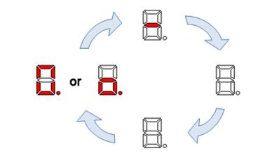
Figure 1.27 Normal display of 7-segment on a system board when restarted
n Please replace a malfunction part and test it.
If above examines do not resolve an error, you will have to replace the parts that related to this error and test them. The cause might be a circuit malfunction that related to CAN communication inside of the board and it is difficult to be identified from an outside.
There are 3 parts as below diagram – System Board (BD530), Main Board (BD511), Cable. (If a Main Board and other option module (BD58x) were having a CAN communication, the cause of an error is not likely from Main Board or cable. Please replace a System Board and test it).
(a) Hi5a-S controller
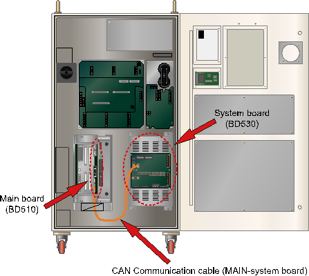
(b) Hi5a-N controller
Figure 1.28 Location of CAN communication cable and a main board (BD511)
(3) Error occurring while a controller is operating normally
n Please observe changes in surrounding environment.
Please observe if there have been any changes in the surrounding field. Check if a new large capacity electric power device has been installed. Quality of electric power and a shortage may effect to the communication and cause this error.
n Please examine a CAN communication line CAN.
Property of matter CAN communication line may be connected with a user's module (BD58x) as well as a System Board and this may cause an error due to a effect caused by a property of line's material. So, if a user's module is being used, please run the following examines.
Ø Please examine a CAN communication connector for user's module.
Data communication with a Main Board uses a half-duplex CAN. Sub modules of controllers are consists of a Daisy chain that uses CAN data communication. So the board has 2 CAN connectors that indicated as CANS1, CANS2. Please check if those connections are valid.
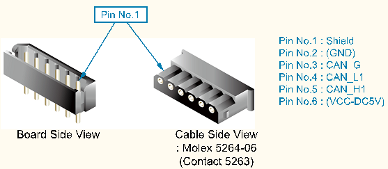
Figure 1.29 CAN connector CANS1, CANS2 of user's module
Table 1-4 Pin Locations for CAN Connector of User's Module
|
Number
|
Title
|
Use
|
|
1
|
Shield
|
To connect the electric shield line of CAN cable
|
|
2
|
(DC5V GND)
|
To connect board power DC5V ground
(Connection with CNP1 is recommended)
|
|
3
|
CAN_G
|
To connect a ground for CAN communication
|
|
4
|
CAN_L1
|
To connect L signal of CAN communication
|
|
5
|
CAN_H1
|
To connect H signal of CAN communication
|
|
6
|
(DC5V)
|
To connect board power DC 5V (Connection with CNP1 is recommended)
|
Ø Please examine the connection of terminal resistor.
If numbers of boards are connected to each other, a terminal resistor must be handled clearly. CAN data communication uses daisy chain method. So the terminal resistor only should be connected to the last CAN communication cable and the terminal resistor must not be connected to any boards in between. Terminal resistor's connection uses a JP1 jumper that located next to the CANS1 and CANS2 connector on a board. If JP1 has been shorted it means that the terminal resistor is connected, and if JP1 has been opened, it eliminates the terminal resistor connection. Please refer to the following Figure.
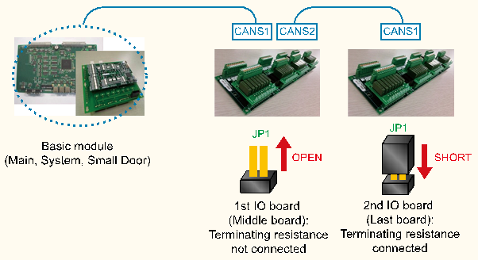
Figure 1.30 Connecting Method of Terminal Resistor on a CAN Communication Line
Ø Please examine if a communication cable uses a twist line.
CAN communication uses twist pair wiring in order to ensure a high quality of communication against external noise. CAN_H1 and CAN_L1 signal line must be twisted to each other (please refer to figure 6.36).
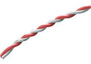
Figure 1.31 Example of Twist pair
Ø Check the wiring structure in case of a controller that uses a small door
CAN communication wiring must not have a branch wiring. All connections must have a series connection from one module to the next module. Following diagram describes a wrong wiring structure.
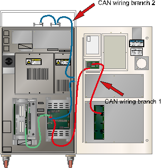
Figure 1.32 Bad example of CAN Communication Wiring Structure (in case of a Hi5a-N controller that uses a small door)
In a diagram, CAN communication line that starts from a System Board has two branches.
n Branch 1:
System Board CAN 2 Connector → Small Door Board → Controller door DIO board
n Branch 2:
System Board CNAS2 Connector → Analog board on Controller's side → DIO boards on a controller
These can have a negative effect on a quality of communication, so please change the wiring structure as below.
n Branch 1:
System Board CAN 2 Connector → Small Door Board → Controller door DIO board → Analog board on Controller's side → DIO boards on a controller
n Branch 2: Eliminated
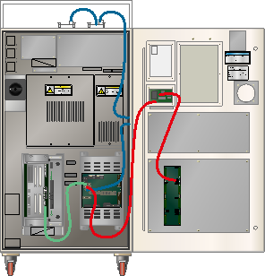
Figure 1.33 Good example of CAN communication wiring structure (in case of a Hi5a-N controller that uses a small door)
If user module that used for a controller's door is not available, please remove the CAN cable that connects a System Board to a small door board as shown in a below diagram. Also making a wiring in order to keep the cable between modules at a minimum distance can increase a quality of communication
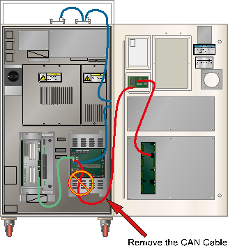
Figure 1.34 Remove the CAN Communication Cable that is Not in Use (in case of a Hi5a-N controller that uses a small door)